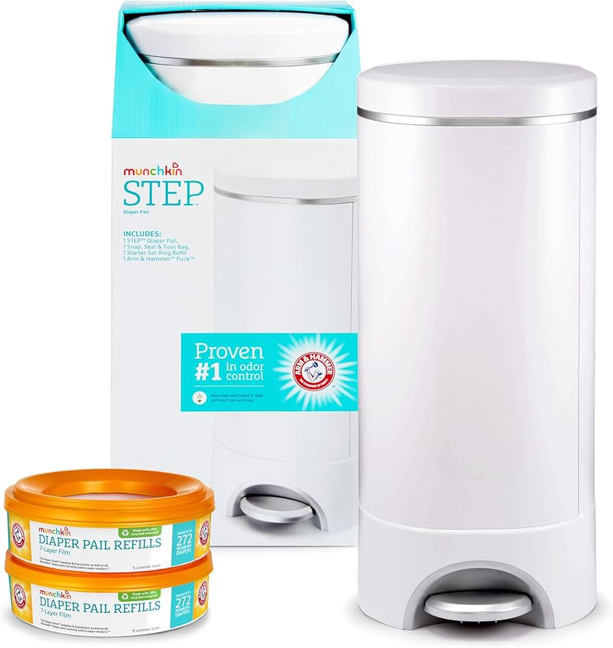
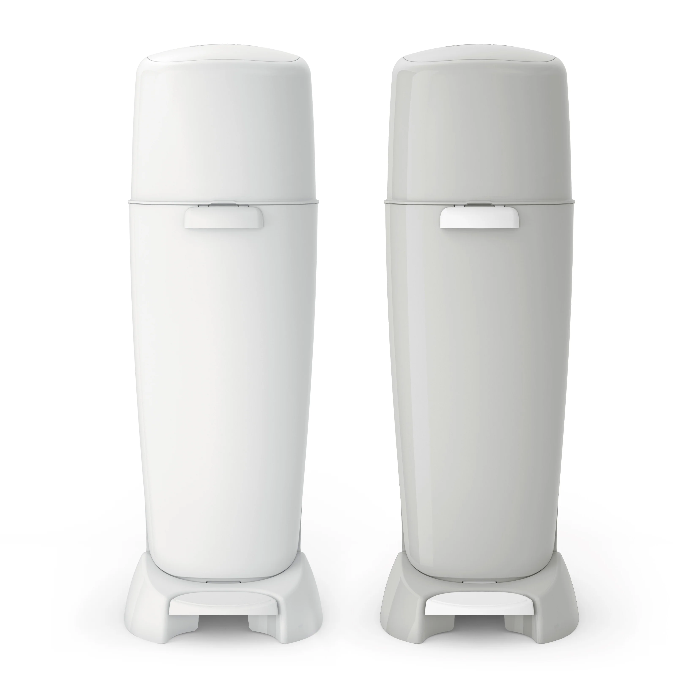
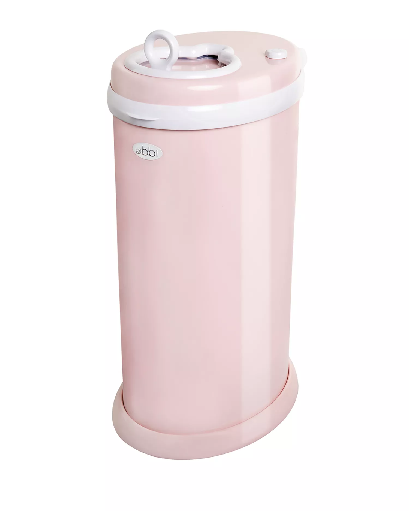

#1 — The Winner
Munchkin Step
The foot pedal matters more than you think. When you have a baby in one arm, not touching the lid is the difference between a functional product and an annoying one. The carbon filter actually controls odor — not just masks it. The refill cartridges are widely available and reasonably priced. It works. It keeps doing its job. There is no learning curve and no unpleasant surprises six months in.
Shop on Amazon
#2 — Decent, With a Catch
Diaper Genie
It has been around for decades for a reason. The individual diaper sealing mechanism is effective and the odor control is reliable. The problem is the refills — proprietary, recurring, and expensive over time. If you already own one or receive it as a gift, use it. It will do the job. It is just not the one I would choose if I were starting from scratch.
Shop on Amazon
Avoid
Ubbi
The design looks good. That is the only positive thing I will say. Every mother I know who bought one regrets it. The sliding lid does not seal properly. The odor control fails quickly. It fills up faster than the size suggests it should. The appeal of using regular trash bags instead of proprietary refills sounds practical on paper — in reality you are trading a minor inconvenience for a smelly nursery. Do not buy it.
See on Amazon